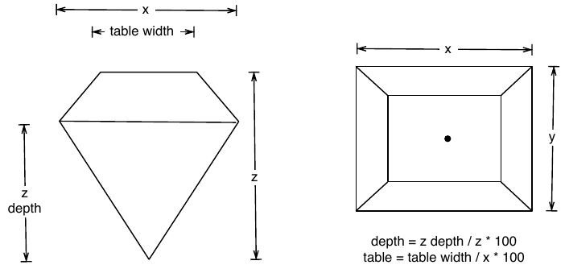
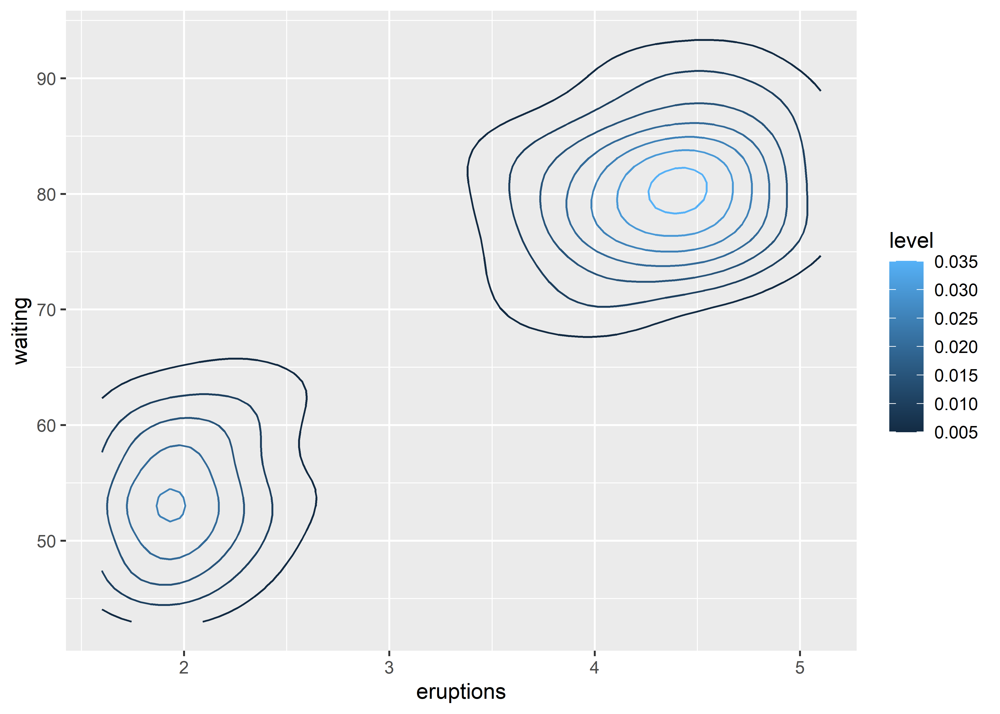

diamonds
#> # A tibble: 53,940 × 10
#> carat cut color clarity depth table price x y z
#> <dbl> <ord> <ord> <ord> <dbl> <dbl> <int> <dbl> <dbl> <dbl>
#> 1 0.23 Ideal E SI2 61.5 55 326 3.95 3.98 2.43
#> 2 0.21 Premium E SI1 59.8 61 326 3.89 3.84 2.31
#> 3 0.23 Good E VS1 56.9 65 327 4.05 4.07 2.31
#> 4 0.29 Premium I VS2 62.4 58 334 4.2 4.23 2.63
#> 5 0.31 Good J SI2 63.3 58 335 4.34 4.35 2.75
#> 6 0.24 Very Good J VVS2 62.8 57 336 3.94 3.96 2.48
#> # ℹ 53,934 more rows5 Statistical summaries
You are reading the work-in-progress third edition of the ggplot2 book. This chapter is currently a dumping ground for ideas, and we don’t recommend reading it.
5.1 Revealing uncertainty
If you have information about the uncertainty present in your data, whether it be from a model or from distributional assumptions, it’s a good idea to display it. There are four basic families of geoms that can be used for this job, depending on whether the x values are discrete or continuous, and whether or not you want to display the middle of the interval, or just the extent:
- Discrete x, range:
geom_errorbar(),geom_linerange() - Discrete x, range & center:
geom_crossbar(),geom_pointrange() - Continuous x, range:
geom_ribbon() - Continuous x, range & center:
geom_smooth(stat = "identity")
These geoms assume that you are interested in the distribution of y conditional on x and use the aesthetics ymin and ymax to determine the range of the y values. If you want the opposite, see sec-coord-flip.
y <- c(18, 11, 16)
df <- data.frame(x = 1:3, y = y, se = c(1.2, 0.5, 1.0))
base <- ggplot(df, aes(x, y, ymin = y - se, ymax = y + se))
base + geom_crossbar()
base + geom_pointrange()
base + geom_smooth(stat = "identity")base + geom_errorbar()
base + geom_linerange()
base + geom_ribbon()Because there are so many different ways to calculate standard errors, the calculation is up to you. For very simple cases, ggplot2 provides some tools in the form of summary functions described below, otherwise you will have to do it yourself. R for Data Science (https://r4ds.had.co.nz) contains more advice on working with more sophisticated models.
5.2 Weighted data
When you have aggregated data where each row in the dataset represents multiple observations, you need some way to take into account the weighting variable. We will use some data collected on Midwest states in the 2000 US census in the built-in midwest data frame. The data consists mainly of percentages (e.g., percent white, percent below poverty line, percent with college degree) and some information for each county (area, total population, population density).
There are a few different things we might want to weight by:
- Nothing, to look at numbers of counties.
- Total population, to work with absolute numbers.
- Area, to investigate geographic effects. (This isn’t useful for
midwest, but would be if we had variables like percentage of farmland.)
The choice of a weighting variable profoundly affects what we are looking at in the plot and the conclusions that we will draw. There are two aesthetic attributes that can be used to adjust for weights. Firstly, for simple geoms like lines and points, use the size aesthetic:
# Unweighted
ggplot(midwest, aes(percwhite, percbelowpoverty)) +
geom_point()
# Weight by population
ggplot(midwest, aes(percwhite, percbelowpoverty)) +
geom_point(aes(size = poptotal / 1e6)) +
scale_size_area("Population\n(millions)", breaks = c(0.5, 1, 2, 4))For more complicated geoms which involve some statistical transformation, we specify weights with the weight aesthetic. These weights will be passed on to the statistical summary function. Weights are supported for every case where it makes sense: smoothers, quantile regressions, boxplots, histograms, and density plots. You can’t see this weighting variable directly, and it doesn’t produce a legend, but it will change the results of the statistical summary. The following code shows how weighting by population density affects the relationship between percent white and percent below the poverty line.
# Unweighted
ggplot(midwest, aes(percwhite, percbelowpoverty)) +
geom_point() +
geom_smooth(method = lm, linewidth = 1)
#> `geom_smooth()` using formula = 'y ~ x'
# Weighted by population
ggplot(midwest, aes(percwhite, percbelowpoverty)) +
geom_point(aes(size = poptotal / 1e6)) +
geom_smooth(aes(weight = poptotal), method = lm, linewidth = 1) +
scale_size_area(guide = "none")
#> `geom_smooth()` using formula = 'y ~ x'When we weight a histogram or density plot by total population, we change from looking at the distribution of the number of counties, to the distribution of the number of people. The following code shows the difference this makes for a histogram of the percentage below the poverty line:
ggplot(midwest, aes(percbelowpoverty)) +
geom_histogram(binwidth = 1) +
ylab("Counties")
ggplot(midwest, aes(percbelowpoverty)) +
geom_histogram(aes(weight = poptotal), binwidth = 1) +
ylab("Population (1000s)")5.3 Diamonds data
To demonstrate tools for large datasets, we’ll use the built-in diamonds dataset, which consists of price and quality information for ~54,000 diamonds:
The data contains the four C’s of diamond quality: carat, cut, colour and clarity; and five physical measurements: depth, table, x, y and z, as described in the figure below.

The dataset has not been well cleaned, so as well as demonstrating interesting facts about diamonds, it also shows some data quality problems.
5.4 Displaying distributions
There are a number of geoms that can be used to display distributions, depending on the dimensionality of the distribution, whether it is continuous or discrete, and whether you are interested in the conditional or joint distribution.
For 1d continuous distributions the most important geom is the histogram, geom_histogram():
ggplot(diamonds, aes(depth)) +
geom_histogram()
#> `stat_bin()` using `bins = 30`. Pick better value with `binwidth`.
ggplot(diamonds, aes(depth)) +
geom_histogram(binwidth = 0.1) +
xlim(55, 70)
#> Warning: Removed 45 rows containing non-finite outside the scale range
#> (`stat_bin()`).
#> Warning: Removed 2 rows containing missing values or values outside the scale range
#> (`geom_bar()`).It is important to experiment with binning to find a revealing view. You can change the binwidth, specify the number of bins, or specify the exact location of the breaks. Never rely on the default parameters to get a revealing view of the distribution. Zooming in on the x axis, xlim(55, 70), and selecting a smaller bin width, binwidth = 0.1, reveals far more detail.
When publishing figures, don’t forget to include information about important parameters (like bin width) in the caption.
If you want to compare the distribution between groups, you have a few options:
- Show small multiples of the histogram,
facet_wrap(~ var). - Use colour and a frequency polygon,
geom_freqpoly(). - Use a “conditional density plot”,
geom_histogram(position = "fill").
The frequency polygon and conditional density plots are shown below. The conditional density plot uses position_fill() to stack each bin, scaling it to the same height. This plot is perceptually challenging because you need to compare bar heights, not positions, but you can see the strongest patterns.
ggplot(diamonds, aes(depth)) +
geom_freqpoly(aes(colour = cut), binwidth = 0.1, na.rm = TRUE) +
xlim(58, 68) +
theme(legend.position = "none")
ggplot(diamonds, aes(depth)) +
geom_histogram(aes(fill = cut), binwidth = 0.1, position = "fill",
na.rm = TRUE) +
xlim(58, 68) +
theme(legend.position = "none")(We’ve suppressed the legends to focus on the display of the data.)
Both the histogram and frequency polygon geom use the same underlying statistical transformation: stat = "bin". This statistic produces two output variables: count and density. By default, count is mapped to y-position, because it’s most interpretable. The density is the count divided by the total count multiplied by the bin width, and is useful when you want to compare the shape of the distributions, not the overall size.
An alternative to a bin-based visualisation is a density estimate. geom_density() places a little normal distribution at each data point and sums up all the curves. It has desirable theoretical properties, but is more difficult to relate back to the data. Use a density plot when you know that the underlying density is smooth, continuous and unbounded. You can use the adjust parameter to make the density more or less smooth.
ggplot(diamonds, aes(depth)) +
geom_density(na.rm = TRUE) +
xlim(58, 68) +
theme(legend.position = "none")
ggplot(diamonds, aes(depth, fill = cut, colour = cut)) +
geom_density(alpha = 0.2, na.rm = TRUE) +
xlim(58, 68) +
theme(legend.position = "none")
Note that the area of each density estimate is standardised to one so that you lose information about the relative size of each group.
The histogram, frequency polygon and density display a detailed view of the distribution. However, sometimes you want to compare many distributions, and it’s useful to have alternative options that sacrifice quality for quantity. Here are three options:
geom_boxplot(): the box-and-whisker plot shows five summary statistics along with individual “outliers”. It displays far less information than a histogram, but also takes up much less space.You can use boxplot with both categorical and continuous x. For continuous x, you’ll also need to set the group aesthetic to define how the x variable is broken up into bins. A useful helper function is
cut_width():ggplot(diamonds, aes(clarity, depth)) + geom_boxplot() ggplot(diamonds, aes(carat, depth)) + geom_boxplot(aes(group = cut_width(carat, 0.1))) + xlim(NA, 2.05) #> Warning: Removed 997 rows containing missing values or values outside the scale range #> (`stat_boxplot()`).geom_violin(): the violin plot is a compact version of the density plot. The underlying computation is the same, but the results are displayed in a similar fashion to the boxplot:ggplot(diamonds, aes(clarity, depth)) + geom_violin() ggplot(diamonds, aes(carat, depth)) + geom_violin(aes(group = cut_width(carat, 0.1))) + xlim(NA, 2.05) #> Warning: Removed 997 rows containing non-finite outside the scale range #> (`stat_ydensity()`).geom_dotplot(): draws one point for each observation, carefully adjusted in space to avoid overlaps and show the distribution. It is useful for smaller datasets.
5.4.1 Exercises
What binwidth tells you the most interesting story about the distribution of
carat?Draw a histogram of
price. What interesting patterns do you see?How does the distribution of
pricevary withclarity?Overlay a frequency polygon and density plot of
depth. What computed variable do you need to map toyto make the two plots comparable? (You can either modifygeom_freqpoly()orgeom_density().)
5.5 Dealing with overplotting
The scatterplot is a very important tool for assessing the relationship between two continuous variables. However, when the data is large, points will be often plotted on top of each other, obscuring the true relationship. In extreme cases, you will only be able to see the extent of the data, and any conclusions drawn from the graphic will be suspect. This problem is called overplotting.
There are a number of ways to deal with it depending on the size of the data and severity of the overplotting. The first set of techniques involves tweaking aesthetic properties. These tend to be most effective for smaller datasets:
Very small amounts of overplotting can sometimes be alleviated by making the points smaller, or using hollow glyphs. The following code shows some options for 2000 points sampled from a bivariate normal distribution.
df <- data.frame(x = rnorm(2000), y = rnorm(2000)) norm <- ggplot(df, aes(x, y)) + xlab(NULL) + ylab(NULL) norm + geom_point() norm + geom_point(shape = 1) # Hollow circles norm + geom_point(shape = ".") # Pixel sizedFor larger datasets with more overplotting, you can use alpha blending (transparency) to make the points transparent. If you specify
alphaas a ratio, the denominator gives the number of points that must be overplotted to give a solid colour. Values smaller than ~\(1/500\) are rounded down to zero, giving completely transparent points.norm + geom_point(alpha = 1 / 3) norm + geom_point(alpha = 1 / 5) norm + geom_point(alpha = 1 / 10)If there is some discreteness in the data, you can randomly jitter the points to alleviate some overlaps with
geom_jitter(). This can be particularly useful in conjunction with transparency. By default, the amount of jitter added is 40% of the resolution of the data, which leaves a small gap between adjacent regions. You can override the default withwidthandheightarguments.
Alternatively, we can think of overplotting as a 2d density estimation problem, which gives rise to two more approaches:
Bin the points and count the number in each bin, then visualise that count (the 2d generalisation of the histogram),
geom_bin2d(). Breaking the plot into many small squares can produce distracting visual artefacts. (D. B. Carr et al. 1987) suggests using hexagons instead, and this is implemented ingeom_hex(), using the hexbin package (D. Carr, Lewin-Koh, and Mächler 2014).The code below compares square and hexagonal bins, using parameters
binsandbinwidthto control the number and size of the bins.norm + geom_bin2d() norm + geom_bin2d(bins = 10)norm + geom_hex() norm + geom_hex(bins = 10)Estimate the 2d density with
stat_density2d(), and then display using one of the techniques for showing 3d surfaces in sec-surface.If you are interested in the conditional distribution of y given x, then the techniques of sec-distribution will also be useful.
Another approach to dealing with overplotting is to add data summaries to help guide the eye to the true shape of the pattern within the data. For example, you could add a smooth line showing the centre of the data with geom_smooth() or use one of the summaries below.
5.6 Statistical summaries
geom_histogram() and geom_bin2d() use a familiar geom, geom_bar() and geom_raster(), combined with a new statistical transformation, stat_bin() and stat_bin2d(). stat_bin() and stat_bin2d() combine the data into bins and count the number of observations in each bin. But what if we want a summary other than count? So far, we’ve just used the default statistical transformation associated with each geom. Now we’re going to explore how to use stat_summary_bin() and stat_summary_2d() to compute different summaries.
Let’s start with a couple of examples with the diamonds data. The first example in each pair shows how we can count the number of diamonds in each bin; the second shows how we can compute the average price.
ggplot(diamonds, aes(color)) +
geom_bar()
ggplot(diamonds, aes(color, price)) +
geom_bar(stat = "summary_bin", fun = mean)ggplot(diamonds, aes(table, depth)) +
geom_bin2d(binwidth = 1, na.rm = TRUE) +
xlim(50, 70) +
ylim(50, 70)
ggplot(diamonds, aes(table, depth, z = price)) +
geom_raster(binwidth = 1, stat = "summary_2d", fun = mean,
na.rm = TRUE) +
xlim(50, 70) +
ylim(50, 70)
#> Warning: Raster pixels are placed at uneven horizontal intervals and will be shifted
#> ℹ Consider using `geom_tile()` instead.
#> Raster pixels are placed at uneven horizontal intervals and will be shifted
#> ℹ Consider using `geom_tile()` instead.To get more help on the arguments associated with the two transformations, look at the help for stat_summary_bin() and stat_summary_2d(). You can control the size of the bins and the summary functions. stat_summary_bin() can produce y, ymin and ymax aesthetics, also making it useful for displaying measures of spread. See the docs for more details. You’ll learn more about how geoms and stats interact in sec-stat.
These summary functions are quite constrained but are often useful for a quick first pass at a problem. If you find them restraining, you’ll need to do the summaries yourself (see R for Data Science https://r4ds.had.co.nz for details)
5.7 Surfaces
So far we’ve considered two classes of geoms:
Simple geoms where there’s a one-on-one correspondence between rows in the data frame and physical elements of the geom
Statistical geoms where introduce a layer of statistical summaries in between the raw data and the result
Now we’ll consider cases where a visualisation of a three dimensional surface is required. The ggplot2 package does not support true 3d surfaces, but it does support many common tools for summarising 3d surfaces in 2d: contours, coloured tiles and bubble plots. These all work similarly, differing only in the aesthetic used for the third dimension. Here is an example of a contour plot:
ggplot(faithfuld, aes(eruptions, waiting)) +
geom_contour(aes(z = density, colour = ..level..))
#> Warning: The dot-dot notation (`..level..`) was deprecated in ggplot2 3.4.0.
#> ℹ Please use `after_stat(level)` instead.
The reference to the ..level.. variable in this code may seem confusing, because there is no variable called ..level.. in the faithfuld data. In this context the .. notation refers to a variable computed internally (see sec-generated-variables). To display the same density as a heat map, you can use geom_raster():
ggplot(faithfuld, aes(eruptions, waiting)) +
geom_raster(aes(fill = density))# Bubble plots work better with fewer observations
small <- faithfuld[seq(1, nrow(faithfuld), by = 10), ]
ggplot(small, aes(eruptions, waiting)) +
geom_point(aes(size = density), alpha = 1/3) +
scale_size_area()For interactive 3d plots, including true 3d surfaces, see RGL, http://rgl.neoscientists.org/about.shtml.
Carr, D. B., R. J. Littlefield, W. L. Nicholson, and J. S. Littlefield. 1987. “Scatterplot Matrix Techniques for Large N.” Journal of the American Statistical Association 82 (398): 424–36.
Carr, Dan, Nicholas Lewin-Koh, and Martin Mächler. 2014. Hexbin: Hexagonal Binning Routines.